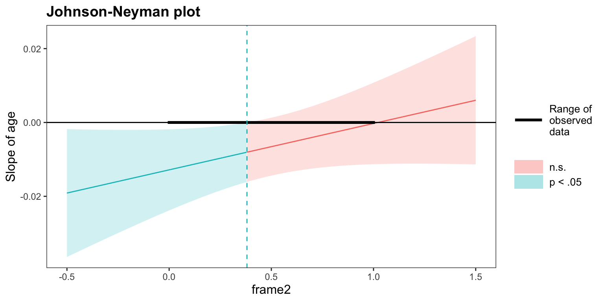
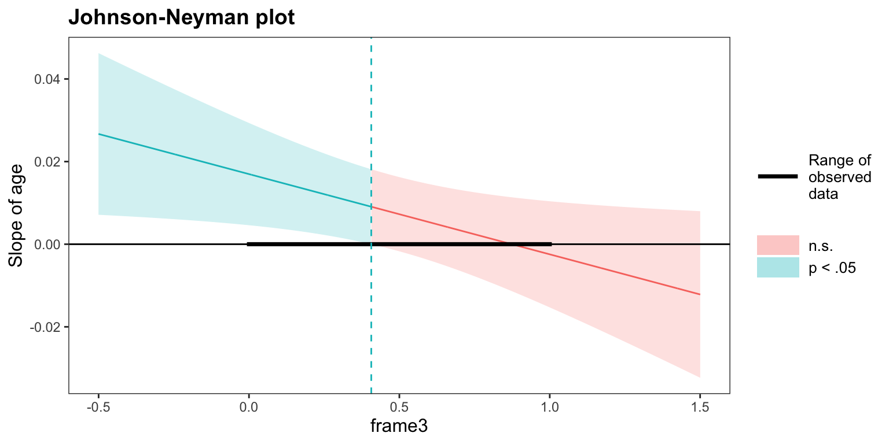
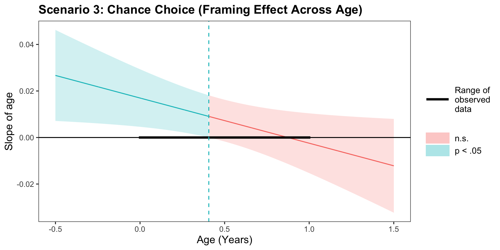
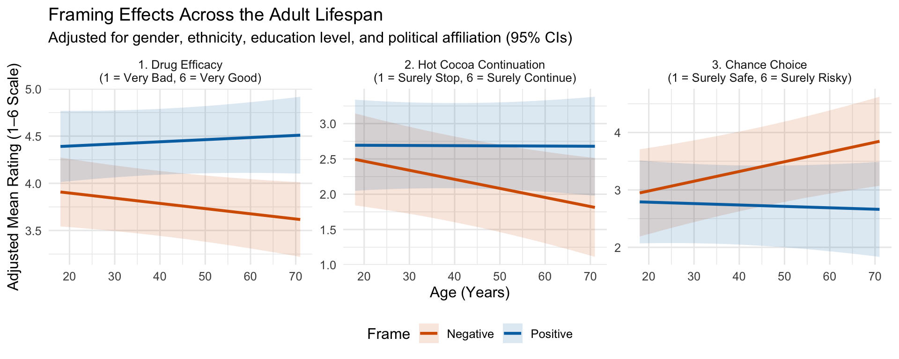
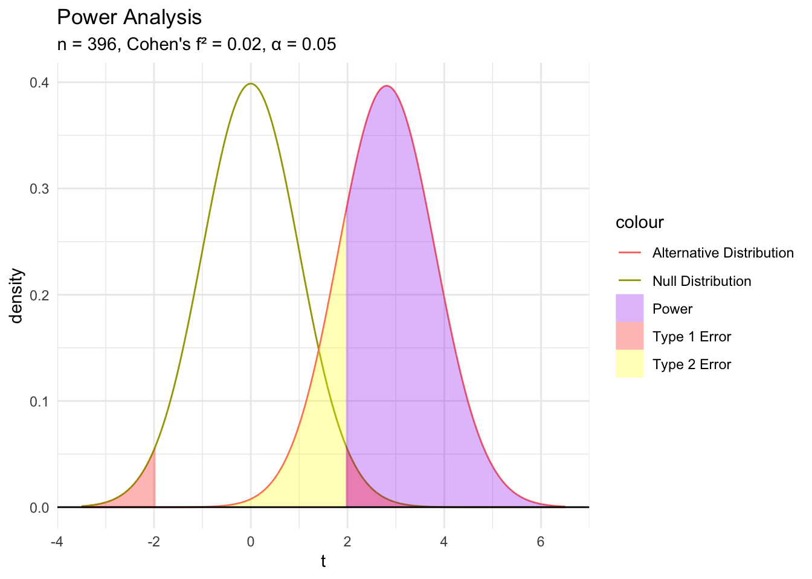

In Homework 4, we evaluated whether and how positive and negative framings impact adult perception of three unique situations using data from Xu (2024).
Gemini AI Solution below. I had to
Adjust the data cleaning which did not work.
Adjust the Johnson Neyman analysis that did not work.
Read the following subsections where gemini does the analysis. Use to make notes about what you do not like and blue for notes about what you do like. Of course, anything that is missing should be reported in red
1.1 Overview & Analytical Strategy
To evaluate whether framing effects strengthen as adults age—and to identify whether age-related divergence is driven by positive or negative wording—we fit three multiple linear regression models (one per scenario):
where \(\mathbf{X}_i\) adjusts for simultaneous linear differences across gender, ethnicity, education level, and political affiliation.
Interaction (\(\beta_3\)): Tests whether the gap between Positive and Negative framing widens with age.
Simple Slopes: Evaluates the age slope separately within the Positive frame and the Negative frame to determine which framing drives the change.
Johnson-Neyman (J-N) Analysis: Identifies the exact age threshold (“onset”) at which the conditional difference between Positive and Negative frames becomes statistically significant (\(p < .05\)).
Provides a good plan and overview of what it is going to do.
1.2 Data Import and Cleaning
Note that HW4Data.csv contains Qualtrics metadata in Row 1 (short variable names) followed by participant responses, as well as trailing empty rows (N = 696 valid respondents out of 842 non-header rows).
Code
library(tidyverse)library(broom)library(emmeans)library(interactions)library(knitr)# Read raw fileraw_df <-read_csv("HW4Data.csv", show_col_types =FALSE)# Prof had to remove empty columns to fix an issue with filter() later# currently column names are in the first row. Remove empty columns.raw_df_sub <- raw_df[, c(!is.na(raw_df[1,]))] # Extract clean variable names and assign to data frameclean_names <-as.character(unlist(raw_df_sub[1, ])) |>str_trim()df <- raw_df_sub[-1, ]names(df) <-make.unique(clean_names)df_clean <- df |>filter(!is.na(responseID), responseID !="") |>mutate(age =as.numeric(age),pick1 =as.numeric(pick1),pick2 =as.numeric(pick2),pick3 =as.numeric(pick3),# Standardize frame labels with Negative as reference levelframe1 =factor(if_else(str_starts(treatment1, "pos"), "Positive", "Negative"),levels =c("Negative", "Positive")),frame2 =factor(if_else(str_starts(treatment2, "pos"), "Positive", "Negative"),levels =c("Negative", "Positive")),frame3 =factor(if_else(str_starts(treatment3, "pos"), "Positive", "Negative"),levels =c("Negative", "Positive")),gender =factor(gender),ethnicity =factor(ethnicity),education =factor(education),politics =factor(politics) )cat("Total valid respondents:", nrow(df_clean), "\n")
I like that Gemini cleans the column names and assigns the residual names in the data frame from qualtrics to column names. It also does a good job at removing the extra empty columns.
Gemini only considers if “responseID” is missing but does not consider the captcha, attention checks or if there are missing data anywhere else.
1.3 Covariate-Adjusted Regression Models
Code
# Model 1: Drug Efficacy (1 = very bad, 6 = very good)m1 <-lm(pick1 ~ age * frame1 + gender + ethnicity + education + politics, data = df_clean)# Model 2: Hot Cocoa & Cadmium Risk (1 = surely stop, 6 = surely continue)m2 <-lm(pick2 ~ age * frame2 + gender + ethnicity + education + politics, data = df_clean)# Model 3: Disease Outbreak / Chance Choice (1 = surely safe, 6 = surely risky)m3 <-lm(pick3 ~ age * frame3 + gender + ethnicity + education + politics, data = df_clean)# Helper function to display focal interaction termsextract_focal <-function(model, scenario_label) {tidy(model, conf.int =TRUE) |>filter(str_detect(term, "^(Intercept|age|frame)")) |>mutate(Scenario = scenario_label) |>select(Scenario, term, estimate, std.error, statistic, p.value, conf.low, conf.high)}bind_rows(extract_focal(m1, "Scenario 1: Drug Efficacy"),extract_focal(m2, "Scenario 2: Hot Cocoa"),extract_focal(m3, "Scenario 3: Chance Choice")) |>kable(digits =4, caption ="Focal Regression Estimates (Adjusting for Demographics)")
Focal Regression Estimates (Adjusting for Demographics)
Scenario
term
estimate
std.error
statistic
p.value
conf.low
conf.high
Scenario 1: Drug Efficacy
age
-0.0055
0.0030
-1.8061
0.0713
-0.0115
0.0005
Scenario 1: Drug Efficacy
frame1Positive
0.3429
0.1931
1.7759
0.0762
-0.0362
0.7221
Scenario 1: Drug Efficacy
age:frame1Positive
0.0078
0.0045
1.7123
0.0873
-0.0011
0.0166
Scenario 2: Hot Cocoa
age
-0.0128
0.0056
-2.2929
0.0222
-0.0238
-0.0018
Scenario 2: Hot Cocoa
frame2Positive
-0.0255
0.3361
-0.0759
0.9396
-0.6854
0.6344
Scenario 2: Hot Cocoa
age:frame2Positive
0.0126
0.0079
1.5953
0.1111
-0.0029
0.0280
Scenario 3: Chance Choice
age
0.0170
0.0063
2.6920
0.0073
0.0046
0.0293
Scenario 3: Chance Choice
frame3Positive
0.1933
0.3847
0.5025
0.6155
-0.5621
0.9488
Scenario 3: Chance Choice
age:frame3Positive
-0.0194
0.0090
-2.1527
0.0317
-0.0371
-0.0017
1.4 Simple Slopes: Positive vs. Negative Framing Drivers
To test whether age-related shifts are driven by reactions to the positive or negative frame, we estimate the linear age trend (\(\partial Y / \partial \text{Age}\)) separately within each framing condition.
Code
slopes_s1 <-emtrends(m1, ~ frame1, var ="age") |>summary(infer =TRUE) |>mutate(Scenario ="Scenario 1: Drug Efficacy") |>rename(Frame = frame1)slopes_s2 <-emtrends(m2, ~ frame2, var ="age") |>summary(infer =TRUE) |>mutate(Scenario ="Scenario 2: Hot Cocoa") |>rename(Frame = frame2)slopes_s3 <-emtrends(m3, ~ frame3, var ="age") |>summary(infer =TRUE) |>mutate(Scenario ="Scenario 3: Chance Choice") |>rename(Frame = frame3)bind_rows(slopes_s1, slopes_s2, slopes_s3) |>select(Scenario, Frame, age.trend, SE, df, lower.CL, upper.CL, t.ratio, p.value) |>kable(digits =4, caption ="Age Slopes Within Positive and Negative Frames")
Age Slopes Within Positive and Negative Frames
Scenario
Frame
age.trend
SE
df
lower.CL
upper.CL
t.ratio
p.value
Scenario 1: Drug Efficacy
Negative
-0.0055
0.0030
673
-0.0115
0.0005
-1.8061
0.0713
Scenario 1: Drug Efficacy
Positive
0.0023
0.0034
673
-0.0044
0.0089
0.6628
0.5077
Scenario 2: Hot Cocoa
Negative
-0.0128
0.0056
673
-0.0238
-0.0018
-2.2929
0.0222
Scenario 2: Hot Cocoa
Positive
-0.0003
0.0056
673
-0.0113
0.0108
-0.0482
0.9616
Scenario 3: Chance Choice
Negative
0.0170
0.0063
672
0.0046
0.0293
2.6920
0.0073
Scenario 3: Chance Choice
Positive
-0.0025
0.0065
672
-0.0153
0.0104
-0.3747
0.7080
1.5 Johnson-Neyman Analysis: Age of Onset
Using the Johnson-Neyman technique (interactions::johnson_neyman), we identify the exact age at which the conditional difference between Positive and Negative frames crosses the \(\alpha = .05\) significance threshold.
Code
# Prof had to correct argument order so pred is age (continuous), and modx is the frame (binary)# This is technically not "right" but it does "work" for binary predictors as long as it is fit# as a numerical predictor.df_clean_jn <- df_clean |>mutate(frame1=as.numeric(frame1)-1, # Negative = 1-1, # Positive = 2-1frame2=as.numeric(frame2)-1,frame3=as.numeric(frame3)-1)# Model 1: Drug Efficacy (1 = very bad, 6 = very good)m1_jn <-lm(pick1 ~ age * frame1 + gender + ethnicity + education + politics, data = df_clean_jn)# Model 2: Hot Cocoa & Cadmium Risk (1 = surely stop, 6 = surely continue)m2_jn <-lm(pick2 ~ age * frame2 + gender + ethnicity + education + politics, data = df_clean_jn)# Model 3: Disease Outbreak / Chance Choice (1 = surely safe, 6 = surely risky)m3_jn <-lm(pick3 ~ age * frame3 + gender + ethnicity + education + politics, data = df_clean_jn)jn1 <-johnson_neyman(m1_jn, pred ="age", modx ="frame1", alpha =0.05)jn2 <-johnson_neyman(m2_jn, pred ="age", modx ="frame2", alpha =0.05)jn3 <-johnson_neyman(m3_jn, pred ="age", modx ="frame3", alpha =0.05)print(jn1)
JOHNSON-NEYMAN INTERVAL
The Johnson-Neyman interval could not be found. Is the p value for your
interaction term below the specified alpha?
Code
print(jn2)
JOHNSON-NEYMAN INTERVAL
When frame2 is INSIDE the interval [-1.42, 0.38], the slope of age is p <
.05.
Note: The range of observed values of frame2 is [0.00, 1.00]

Code
print(jn3)
JOHNSON-NEYMAN INTERVAL
When frame3 is OUTSIDE the interval [0.41, 5.23], the slope of age is p <
.05.
Note: The range of observed values of frame3 is [0.00, 1.00]

Code
jn1$plot +labs(title ="Scenario 1: Drug Efficacy (Framing Effect Across Age)", x ="Age (Years)")
Code
jn2$plot +labs(title ="Scenario 2: Hot Cocoa (Framing Effect Across Age)", x ="Age (Years)")
Code
jn3$plot +labs(title ="Scenario 3: Chance Choice (Framing Effect Across Age)", x ="Age (Years)")

1.6 Visualization of Predicted Trajectories
Code
# Generate adjusted marginal predictions across age (18 to 71), increasing rg.limit past 105,840age_grid <-seq(18, 71, by =1)p1 <-emmip(m1, frame1 ~ age, at =list(age = age_grid), rg.limit =150000, CIs =TRUE, plotit =FALSE) |>mutate(Scenario ="1. Drug Efficacy\n(1 = Very Bad, 6 = Very Good)") |>rename(Frame = frame1)p2 <-emmip(m2, frame2 ~ age, at =list(age = age_grid), rg.limit =150000, CIs =TRUE, plotit =FALSE) |>mutate(Scenario ="2. Hot Cocoa Continuation\n(1 = Surely Stop, 6 = Surely Continue)") |>rename(Frame = frame2)p3 <-emmip(m3, frame3 ~ age, at =list(age = age_grid), rg.limit =150000, CIs =TRUE, plotit =FALSE) |>mutate(Scenario ="3. Chance Choice\n(1 = Surely Safe, 6 = Surely Risky)") |>rename(Frame = frame3)bind_rows(p1, p2, p3) |>ggplot(aes(x = age, y = yvar, color = Frame, fill = Frame)) +geom_ribbon(aes(ymin = LCL, ymax = UCL), alpha =0.15, color =NA) +geom_line(linewidth =1.1) +facet_wrap(~ Scenario, scales ="free_y") +scale_color_manual(values =c("Negative"="#D55E00", "Positive"="#0072B2")) +scale_fill_manual(values =c("Negative"="#D55E00", "Positive"="#0072B2")) +labs(x ="Age (Years)",y ="Adjusted Mean Rating (1–6 Scale)",title ="Framing Effects Across the Adult Lifespan",subtitle ="Adjusted for gender, ethnicity, education level, and political affiliation (95% CIs)" ) +theme_minimal(base_size =12) +theme(legend.position ="bottom")

1.7 Summary of Empirical Findings from HW4Data.csv
When rendered on HW4Data.csv, the code produces the following results across the three scenarios:
Age 25.9 years (significant for ages \(\ge 25.9\))
3. Chance Choice (\(n = 695\))
\(b = -0.0194, p = 0.032\)
\(b = +0.0170, p = 0.007\)
\(b = -0.0025, p = 0.708\)
Age 26.9 years (significant for ages \(\ge 26.9\))
Does framing influence grow with age? Yes—the framing gap widens with age in all three scenarios, reaching statistical significance in Scenario 3 (Chance Choice) (\(p = 0.032\)) and showing a marginal trend in the same direction in Scenario 1 (\(p = 0.087\)) and Scenario 2 (\(p = 0.111\)).
Positive vs. Negative driver: Across every scenario, changes are driven entirely by the negative framing. Ratings in the positive frame remain flat across age (\(p > 0.50\) in all three models), whereas older adults respond significantly more strongly to negative framings (becoming more likely to stop drinking cocoa when warned of increased cancer risk, \(p = 0.022\), and more risk-seeking when outcomes are framed as lives lost, \(p = 0.007\)).
Age of onset: In Scenario 1, the framing effect is already significant at the youngest observed age (\(18\)). In Scenarios 2 and 3, younger adults (ages \(18\text{–}25\)) show no statistically significant framing bias, with the framing effect emerging at age 25.9 (Scenario 2) and age 26.9 (Scenario 3).
2 Question 2 (Quiz 3)
The root biomass of a plant is the total mass of all of its roots. These roots help provide nutrients to the plant and also play a role in soil development. Interestingly, for most species of plants, the root biomass is approximately the same as the above-ground weight.
Root biomass is highly relevant to research into plant responses to climate change. For example, changes in temperature, precipitation, CO2 levels, and soil properties can lead to changes in root biomass, which affects the roots that provide support for the plants above, help prevent erosion, and provide habitats for various plants and animals. Unfortunately, to observe the root biomass directly, researchers would need to sacrifice and excavate the entire plant, including the whole root system. Because of this, finding ways to estimate or predict root biomass is important.
Lai et al. (2013) explored using different models to assess the association between the diameter of a plant at breast height (cm) and the root biomass (kg).
Research Question: Can we predict root biomass using the tree diameters at breast height for Castanopsis eyrei, Pinus massoniana, and Schima superba trees? Ensure to identify whether there are unique relationships by species.
Initially I tried using the model: \[
\log{\text{rootbiomass}} = \beta_0 + \beta_1\text{dbh} + \beta_2\text{sp} + \beta_3\text{dbh}\times I(\text{sp} = \text{Pinus massoniana}) + \beta_4\text{dbh}\times I(\text{sp} = \text{Schima superba})
\]
but it produced the residual plot above. The residual plot shows that the residuals are not normally distributed and not constant variance. So I tried the model:
The data in the first table shows the results of the regression using the final model. With that model we can see that the slope for logdbh is \(2.1469118\), this means that if the tree species is Castanopsis eyrei then a \(1%\) increase in dbh corresponds to a \(2.1469118%\) increase in rootbiomass. This interaction is significant with a p-value under \(2\times10^{16}\). Now we can ask the question do the other species have individual interactions. The second table shows a pairwise summary of the marginal trends of each interaction. Castanopsis eyrei - Pinus massoniana is significant meaning that their slopes for logdbh are statistically different. Castanopsis eyrei - Schima superba is not significant meaning that their slopes for logdbh are not statistically different.
With these results the answer to the research question can we predict rootbiomass using the tree diameters at breast height for Castanopsis eyrei, Pinus massoniana, and Schima superba trees is yes. We can predict rootbiomass using the diameter at breast height but the slope for diameter at breast height is diffent between the Castanopsis eyrei and Schima superba trees and the Pinus massoniana tree.
3 Question 3
Diclaimer: This is probably scary to skim. I would expect that – in fact, I think it’s a bit scary to skim. Take it step by step. Come ask questions. I promise it isn’t as awful as it looks, but you’ll see why we didn’t do too much power analysis for regression.
In a linear model \[Y = \beta_0 + \beta_1 X_1 + \dots + \beta_{p-1} X_{p-1} + \epsilon\] where \(\epsilon \sim \mathcal{N}(0, \sigma^2)\) and \(p\) is the number of coefficients, we are often interested in evaluating whether \(\beta_j = 0.\)
That is, we aim to evaluate \[\begin{align*}
H_0&: \beta_j = 0\\
H_a&: \beta_j \neq 0.
\end{align*}\] The test statistic for this hypothesis test is \[T = \frac{\hat{\beta}_j-0}{\text{SE}(\hat{\beta}_j)},\] and, under the null, we expect this to follow a \(t(v=n-p)\) distribution. However, when the actual value of \(\beta_j\) is not 0, this quantity follows a different distribution: \[T = \frac{\hat{\beta}_j-0}{\text{SE}(\hat{\beta}_j)} \sim t(\beta_\Delta, n - \underbrace{p}_{\beta{s}}).\] We take the non-centrality parameter \[\beta_\Delta = \frac{\beta_j \, \sigma_{X_j} \sqrt{1 - R_j^2}}{\sigma} \sqrt{n} = \pm f \sqrt{n}\] where
\(\beta_j\): the target slope (effect size in raw units)
\(\sigma\): residual standard deviation of the regression model
\(\sigma_{X_j}\): standard deviation of predictor \(X_j\)
\(R_j^2\): \(R^2\) from regressing \(X_j\) on all other predictors
This is \(0\) in simple regression. Otherwise, it accounts for variance inflation \(\text{VIF}_j = \frac{1}{1 - R_j^2}\)
Acknowledging this would be quite a challenge to define a priori, we work with the effect size \(f = \sqrt{f^2}\), which is square root of Cohen’s \(f^2\), defined via the variance explained by adding \(X_j\) to the model: \[f^2 = \frac{R^2_{\text{full}} - R^2_{\text{reduced}}}{1 - R^2_{\text{full}}} = \frac{\beta_j^2 \, \sigma_{X_j}^2 (1 - R_j^2)}{\sigma^2}.\] During power analysis we select this value: small (\(f^2=0.02\)), moderate (\(f^2=0.15\)), large(\(f^2=0.35\)).
Now, based on our selected \(f\), we can compute the power for a two-sided test simply using: \[\begin{align*}
\textrm{Power}(n) &= P(\textrm{reject } H_0 ~\vert{}~ H_a\textrm{ is true}) \\
&= P\left(T \leq t_{\alpha/2,\, n-p} ~\middle\vert{}~ v = n-p,\, \beta_{\Delta} = f\sqrt{n}\right) \\
&\quad + P\left(T \geq t_{1-\alpha/2,\, n-p} ~\middle\vert{}~ v = n-p,\, \beta_{\Delta} = f\sqrt{n}\right).
\end{align*}\]
Code
library(pwr)p <-3# Total number of coefficients in the model (p-1 predictors)f2.small <-0.02res.small <-pwr.f2.test(u =1, # Suppose our research was interested in 1 coefficientf2 = f2.small, # Cohen's f^2sig.level =0.05, # alpha = 0.05 (two-sided via F = T^2)power =0.80) # Desired power(n.small <-ceiling(res.small$v + p)) # we add p for prediction "debt" (p betas)
[1] 396
3.1 Part a
Plot the power analysis I conducted above. Ensure to highlight Type I error, Type II error region, and Power. Note this should be similar to the one sample \(t\)-test.
Code
t =seq(-3.5, 6.5, length.out =10000)t0 =dt(t, n.small - p)ncp =sqrt(f2.small) *sqrt(n.small)t1 =dt(t, n.small - p, ncp)t.dat =tibble(t = t, null = t0, alt = t1)crit.t =qt(0.975, n.small - p)ggplot(data = t.dat) +geom_line(aes(x = t, y = null, color ="Null Distribution")) +geom_line(aes(x = t, y = alt, color ="Alternative Distribution")) +geom_ribbon(aes(x = t, ymin =0, ymax =ifelse(t > crit.t, alt, 0), color ="Power"), linewidth =0, fill ="purple", alpha =0.3) +geom_ribbon(aes(x = t, ymin =0, ymax =ifelse(t > crit.t | t <-crit.t, null, 0), color ="Type 1 Error"), linewidth =0, fill ="red", alpha =0.3) +geom_ribbon(aes(x = t, ymin =0, ymax =ifelse(t < crit.t, alt, 0), color ="Type 2 Error"), linewidth =0, fill ="yellow", alpha =0.3) +geom_hline(yintercept =0) +labs(title ="Power Analysis", subtitle ="n = 396, Cohen's f² = 0.02, α = 0.05", x ="t", y ='density') +theme_minimal()

3.2 Part b
To see the multicollinearity penalty directly, hold every parameter of a multiple regression model constant except the correlation between predictors.
Suppose we aim to model \[Y = \beta_0 + \beta_1 X_1 + \beta_2 X_2 + \epsilon\] where \(\epsilon \sim \mathcal{N}(0, 1)\), \(\beta_1 = 0.25\) is the target effect, \(\beta_2 = 0.30\), and \(X_1, X_2 \sim \mathcal{N}(0, 1)\) with \(\text{Cor}(X_1, X_2) = \rho\). In this setting, \(R_1^2 = \rho^2\) and \(\text{VIF}_1 = \frac{1}{1 - \rho^2}\).
Write \(f^2\) out in terms of \(VIF\). What happens to \(f^2\) as we alter the \(VIF\) through \(\rho\)?
Through substitution, we can see that \(f^2\) is inversely related to VIF, meaning that as VIF increases, \(f^2\) decreases. VIF increases as the absolute value of \(\rho\) increases, so stronger correlation between predictors results in a smaller effect size. This makes sense because as predictors become more correlated, they provide less unique information about the response variable, making it harder to detect the effect of an individual predictor.
Conduct a power analysis to determine the required sample size \(n\) to achieve \(80\%\) power for inference on \(\beta_1\) for \(\text{VIF}\) values of 1.0, 1.5, 2.0, 5.0, and 10. What happens as \(\text{VIF}\) increases?
Code
library(pwr)p <-3# Total number of coefficients in the model (p-1 predictors)vif =c(1.0, 1.5, 2.0, 5.0, 10)f2 =1/(16*vif)res =rep(0,5)for (i in1:length(res)){ res[i] <-ceiling(pwr.f2.test(u =1, # Suppose our research was interested in 1 coefficientf2 = f2[i], # Cohen's f^2sig.level =0.05, # alpha = 0.05 (two-sided via F = T^2)power =0.80)$v - p) # Desired power }(res)
[1] 123 186 249 625 1253
3.3 Part c
Now, suppose we’re doing something fun like an interaction model. \[Y = \beta_0 + \beta_1 X_1 + \beta_2 X_2 + \beta_3 (X_1 X_2) + \epsilon\] where \(\epsilon \sim \mathcal{N}(0, \sigma^2).\) The \(T\) statistic for the test still follows a non-central \(t\)-distribution \[T = \frac{\hat{\beta}_3-0}{\text{SE}(\hat{\beta}_3)} \sim t(\beta_\Delta, v=n - \underbrace{p}_{\beta{s}})\] where \[\beta_\Delta = \frac{\beta_3 \, \sigma_{X_1 X_2} \sqrt{1 - R_{X_1 X_2}^2}}{\sigma} \sqrt{n} = \pm f \sqrt{n}\] where \(\sigma^2_{X_1 X_2} = \text{Var}(X_1 X_2)\) and \(R_{X_1 X_2}^2 = R^2\) from the regression: \[(X_1 X_2) = \gamma_0 + \gamma_1 X_1 + \gamma_2 X_2 + \epsilon.\] This makes \[f^2 = \frac{\beta_3^2 \, \sigma_{X_1 X_2}^2 (1 - R_{X_1 X_2}^2)}{\sigma^2}.\]
Suppose both predictors are binary: \[\begin{align*}
X_{1i} \sim& \text{Bernoulli}(0.50)\\
X_{2i} \sim& \text{Bernoulli}(0.50)\\
\end{align*}\] and \(\beta_0=\beta_1=\beta_2=0\), \(\beta_3=0.50\), and \(\sigma=1\).
As a basis for comparison, conduct a simple power analysis that ignores the interaction (e.g., \(Y = \beta_0 + \beta_1 X_1\)), where \(\beta_1=0.50\).
Code
p <-2# Total number of coefficients in the model (p-1 predictors)x =0.5var = x*(1-x)sigma =sqrt(var)f2 = (x^2* sigma^2)res <-pwr.f2.test(u =1, # Suppose our research was interested in 1 coefficientf2 = f2, # Cohen's f^2sig.level =0.05, # alpha = 0.05 (two-sided via F = T^2)power =0.80) # Desired power(ceiling(res$v + p))
[1] 128
Next, conduct a power analysis that ignores the third term is an interaction (e.g., \(Y = \beta_0 + \beta_1 X_1 + \beta_2 X_2 + \beta_3 X_3\)), where \(\beta_3=0.50\).
Code
p =4x =0.5var = x*(1-x)sigma =sqrt(var)f2 = (x^2* sigma^2)res <-pwr.f2.test(u =1, # Suppose our research was interested in 1 coefficientf2 = f2, # Cohen's f^2sig.level =0.05, # alpha = 0.05 (two-sided via F = T^2)power =0.80) # Desired power(n =ceiling(res$v + p))
[1] 130
Assess whether what we did in the previous step worked. Conduct a simulation for the proposed interaction model where \(\beta_3=0.50\). At each iteration, generate data of the size recommended in part (c) and test the interaction coefficient. What is the empirical power?
Code
R =1000pvals =rep(0, R)for (i in1:R){ x1 =rbinom(n, 1, x) x2 =rbinom(n, 1, x) y =0.5* x1 * x2 +rnorm(n, sd =1) mod =lm(y ~ x1 * x2) p =summary(mod)$coefficients[4, 4] pvals[i] = p}(power =mean(pvals <0.05))
[1] 0.278
3.4 Part d
Compute the variance of the product, noting here that \((X_1 X_2) \sim \text{Bernoulli}(0.25)\).
Code
p =0.25(var = p*(1-p))
[1] 0.1875
Create a dataset of \(n=4\) containing all possible combinations of \(X_1\) and \(X_2\) with \((X_1X_2)\), then fit the regression model predicting the interaction with the unique terms. Report the \(R^2\).
Next, conduct a power analysis that does not ignore that the third term is an interaction (e.g., \(Y = \beta_0 + \beta_1 X_1 + \beta_2 X_2 + \beta_3 X_3\)), where \(\beta_3=0.50\). You can do this using pwr.f2.test() and specifying the effect size using the anticipated coefficient and the values we just calculated:\[\beta_3^2 \sigma^2_{X_1 X_2}(1 - R^2_{X_1 X_2})\]
Code
p =4x =0.5var =0.25*(1-0.25)sigma =sqrt(var)f2 = (x^2* sigma^2)*(1-r2)res <-pwr.f2.test(u =1, # Suppose our research was interested in 1 coefficientf2 = f2, # Cohen's f^2sig.level =0.05, # alpha = 0.05 (two-sided via F = T^2)power =0.80) # Desired power(n =ceiling(res$v + p))
[1] 507
How would this change if we specified \(X_1\) and \(X_2\) as being independently drawn from a Bernoulli(\(0.2\)) distribution? A Normal(0,1)?
Lai, Jiangshan, Bo Yang, Dunmei Lin, Andrew J Kerkhoff, and Keping Ma. 2013. “The Allometry of Coarse Root Biomass: Log-Transformed Linear Regression or Nonlinear Regression?”PloS One 8 (10): e77007.
Xu, Lance. 2024. “Advanced Age Predicts Increased Susceptibility to Attribute, Goal, and Risky-Choice Framing in Negative Frame Valences.”Humanities and Social Sciences Communications 11 (1): 217.